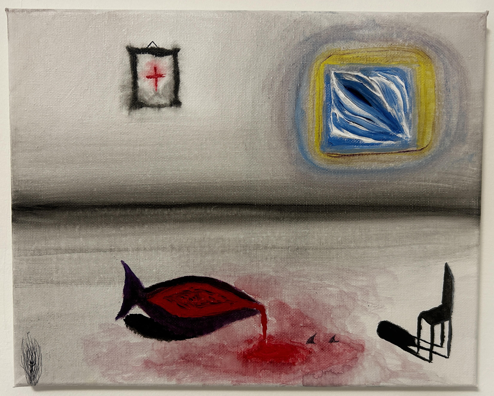

L'opera è di chiara matrice surrealista ed espressionista, focalizzata sul tema dell'isolamento, della perdita, del dolore domestico e della speranza distante. • Il vaso rovesciato e la macchia di sangue: È il fulcro drammatico del quadro. Rappresenta una ferita aperta, il riversarsi di un dolore che non si può più contenere, o il sacrificio di qualcosa di vitale che va perduto sul pavimento freddo. • La sedia ribaltata: Simbolo universale di assenza, abbandono o interruzione improvvisa. Suggerisce una presenza umana che se n'è andata o un ambiente domestico che ha subìto un trauma o un crollo interiore. • La croce rossa nella cornice: Introduce un elemento medico, di cura o di soccorso, ma il fatto che sia confinata all'interno di una cornice cupa la fa sembrare un ricordo, una richiesta di aiuto silenziosa o una ferita istituzionalizzata. • La finestra luminosa (Blu e Giallo): Rappresenta il contrasto più forte dell'opera. Mentre il livello inferiore è dominato dal sangue e dal vuoto, questa apertura verso l'alto (con colori vibranti e caldi) simboleggia una via d'uscita, il mondo esterno, la spiritualità o una speranza che rimane però distante e irraggiungibile per gli elementi in basso.